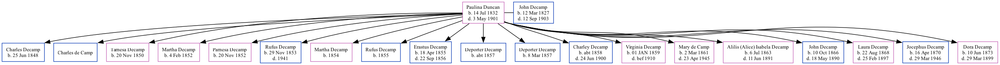

Paulina Decamp (née Duncan) 1832 - 1901
[ Home ] | [ Surnames Index ] | [ Family History ]Paulina was the 3 times great-grandmother of Stephanie Hardesty (née Teten), was born in Narrows, Giles County, Virginia on Jul 14, 18321,2,3 and married John Decamp (with whom she had 19 children: Charles William, Charles William, Tarnesa Ann, Martha Jane, Parnesa Ann, Rufus Harison, Martha J, Rufus, Erastus Alexander, DePorter, DePorter, Charley, Virginia Lueza, Mary Elizabeth, Alilis (Alice) Isabela, John Lewis, Laura Elnora, Jocephus Duncan and Dora) in Mt Arie, North Carolina on May 29, 1848.
During her life, she was living in Cedar, Johnson, Iowa, USA in 18601 and in 18702; and in Solon, Johnson, Iowa2.
She died on May 3, 1901 in Tipton, Iowa3 (cemetery: Masonic).
Children
- Charles William was born on Jun 25, 1848
- Charles William
- Tarnesa Ann was born on Nov 20, 1850
- Martha Jane was born on Feb 4, 1852
- Parnesa Ann was born on Nov 20, 1852
- Rufus Harison was born on Nov 29, 1853
- Martha J was born in 1854
- Rufus was born in 1855
- Erastus Alexander was born on Apr 18, 1855
- DePorter was born c. 1857
- DePorter was born on Mar 8, 1857
- Charley was born c. 1858
- Virginia Lueza was born on Jan 1, 1859
- Mary Elizabeth was born on Mar 2, 1861
- Alilis (Alice) Isabela was born on Jul 6, 1863
- John Lewis was born on Oct 10, 1866
- Laura Elnora was born on Aug 22, 1868
- Jocephus Duncan was born on Apr 16, 1870
- Dora was born on Jun 10, 1873
Citations
- 1860 United States Federal Census Ancestry.com Operations, Inc. (Age in 1860: 28)
- 1870 United States Federal Census Ancestry.com Operations, Inc. (Age in 1870: 38)
- Iowa Cemetery Records Ancestry.com Operations Inc
Family Tree
Data (GEDCOM) maintained by Jay Weston Hannah, Omaha, Nebraska, USA.
Website generated by ged2site. Last updated on Jun 18, 2024.